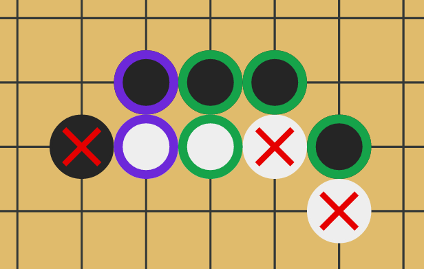

Guess the hidden joseki by submitting move sequences.
Green indicate moves at the correct place and timing within the sequence.
Purple indicate points that are in the sequence, but with incorrect timing and/or stone color.
Red indicate points that are not part of the joseki.
A new puzzle is available every day! For a greater challenge, check out hard mode.
Made with 💖 by a few OGS forum users, using BesoGo for the goban. Find the code on Github.